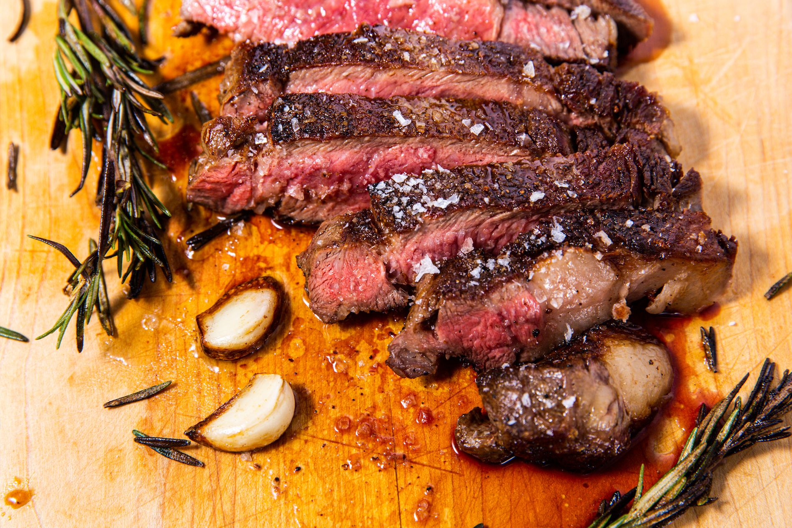

Reverse Seared Steak

Description
Dry steaks aren't great, juicy is better, and to that end a reverse seared
steak is one of the better ways of achieving that moist meat.
Using and oven to slowly bring the uncooked steak up to a mostly cooked
level, keeps the juices from flowing out freely. That still reasonably
juicy steak is then introduced to a staggeringly hot pan to cook on all
sides to get that amazing char, sealing in those juices.
Ingredients
- steak - preferably closer to a 1" thickness
- butter or cooking oil for the pan
- salt and pepper if desired
Steps
- Set your oven to somewhere between 200 and 275 degrees F.
- While that is preheating, season your steak as desired.
- On a greased cooking tray, cook the steak in the oven until
it reaches 15 degrees below your desired level of doneness.
(About 105 for rare, 125 for medium, and 135 for medium well)
Depending on your oven temp, this could take between 20-40 minutes.
- As the steak approaches target temperature, crank the heat up on
stove and get that pan nice and hot.
- Add your oil and/or butter, coating the pan.
- Add steak and carefully sear it on all sides.
- Savor steak.